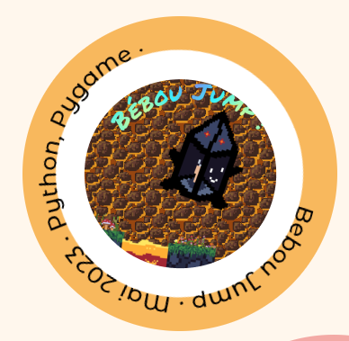
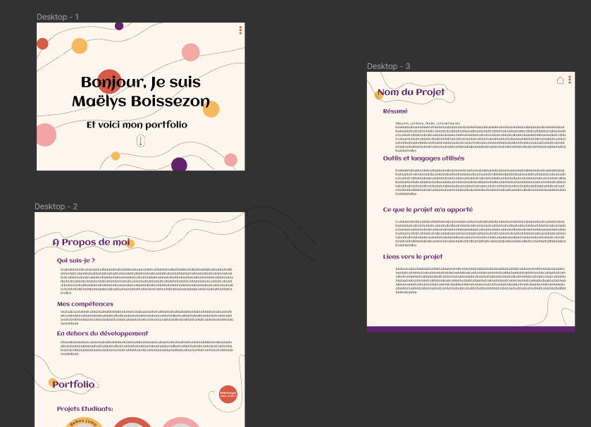

Vous êtes actuellement sur ce projet.
Il me tenait à coeur de faire un portfolio pensé, designé et codé par moi-même.
En effet, tous les ronds présents sur la page (à part ceux contenant les projets sur la première page) sont des circles en SVG. De plus, les textes courbés présentant le nom, la date et les langages du projet sont aussi du SVG. Pour faire cela j'ai utilisé un path sous la forme :
path d=" M (CX - R), CY a R,R 0 1,1 (R * 2),0 a R,R 0 1,1 -(R * 2),0 "
où CX et CY correspondent à où est placé le centre du cercle sur les axes X et Y, R le rayon du cercle et j'y ai simplement assigné une balise text de svg qui suit alors ce fameux path.
Vous pouvez ici voir le path en blanc :
Pour tout le développement, j'ai seulement utilisé du HTML et du CSS.
Pour le design, j'ai utilisé le site Figma pour faire une maquette du site et me donner une idée de ce que pourrait rendre le site.
Le site Figma m'a aussi permis de tracer tous les vecteurs présents sur le site
J'ai pu appronfondir mes connaissances en HTML CSS et j'ai pour la première fois utilisé le langage SVG dans du HTML.